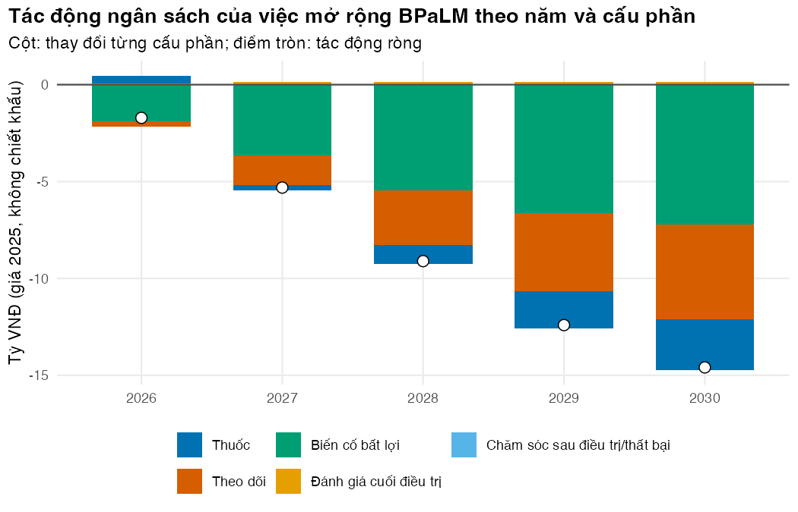
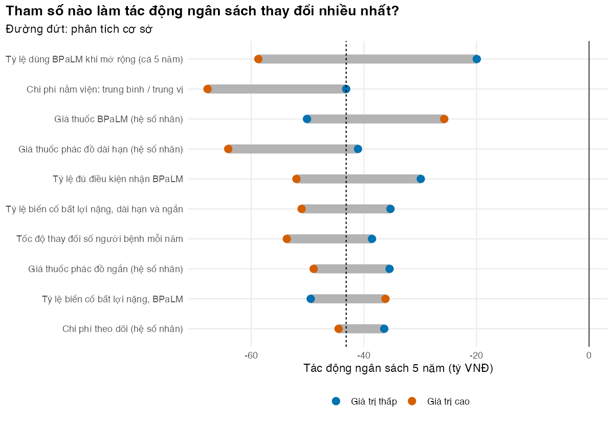

# Vietnamese text in tables and figures needs a UTF-8 locale (Rscript may start in "C")
if (!isTRUE(l10n_info()[["UTF-8"]])) invisible(Sys.setlocale("LC_CTYPE", "en_US.UTF-8"))
source("../_shared/R/helpers.R")
source("../_shared/R/vn_data.R") # course-wide values: vn_context(), vn_prices(), ...
source("../m02-cohort-markov/code/model.R") # M02 model: evaluate_regimen(), run_cea(), ...
source("code/model.R") # M10 functions
library(ggplot2)
p02 <- m02_params("../m02-cohort-markov/params/mdrtb.csv") # M02 parameters + shared prices
pb <- read_params("params/bia.csv")
payer <- read_payer("params/payer.csv")
ctx <- vn_context()
ptab_bia <- attr(pb, "table")
p_bia <- bia_params(p02, pb) # M02 parameters + the BIA's price conventions
extra_months <- 36 # Exercise 2: months followed after the horizon
bn <- function(x) x / 1e9 # VND -> billion VND (tỷ VNĐ)
stopifnot(sum(current_counts(pb)) > 0, all(current_mix(pb) >= 0))Bài 1: Phân tích tác động ngân sách
Ước tính ngân sách tăng thêm hoặc tiết kiệm khi mở rộng BPaLM toàn quốc, theo năm và theo đơn vị chi trả
Vì sao bạn nên quan tâm?
Cuối mỗi năm, Chương trình Chống lao và các bệnh viện phổi tỉnh phải dự trù thuốc và kinh phí cho người bệnh lao kháng thuốc của năm sau. Năm 2024 cả nước có 3,050 người bắt đầu điều trị, trong đó 751 người (25%) đã dùng phác đồ 6 tháng (World Health Organization 2026a). Chương trình báo cáo chi khoảng US$458 tiền thuốc cho mỗi người bệnh (World Health Organization 2026c), tức khoảng 11.4 triệu VNĐ, bằng 1.4 tháng thu nhập bình quân của một người lao động (Cục Thống kê (Bộ Tài chính) 2026). M02 đã cho thấy BPaLM rẻ hơn và tốt hơn cho từng người bệnh, nhưng người giữ ngân sách hỏi khác: nếu từ năm 2026 đưa phần lớn người bệnh sang BPaLM, ngân sách từng năm tăng hay giảm, và quỹ nào chịu? Bài này dựng phân tích tác động ngân sách để trả lời.
Mục tiêu học tập
Sau bài này, bạn có thể:
- Phân biệt câu hỏi của phân tích tác động ngân sách (budget impact analysis, BIA) với câu hỏi của phân tích chi phí-hiệu quả (CEA), và kể các thành phần của một BIA, kể cả cơ cấu điều trị hiện tại.
- Chuyển vết đoàn hệ (Markov trace) của M02 thành dòng tiền theo tháng cho một người bệnh lao đa kháng/kháng rifampicin (MDR/RR-TB), rồi cộng dồn cho nhiều đoàn hệ bắt đầu điều trị ở các tháng khác nhau, gồm cả người đã điều trị từ trước khung thời gian.
- Tính tác động ngân sách theo năm, theo cấu phần chi phí và theo đơn vị chi trả khi mở rộng BPaLM.
- Làm phân tích độ nhạy một chiều và phân tích kịch bản cho BIA, rồi tìm giá thuốc trung hòa ngân sách.
Ý chính
- CEA hỏi “có đáng tiền không”; BIA hỏi “có trả nổi không, ai trả và trả năm nào”. Một can thiệp chi phí-hiệu quả vẫn có thể vượt quá khả năng chi trả (Bilinski và c.s. 2017).
- BIA được làm cho một đơn vị chi trả ngân sách (budget holder) cụ thể, trong khung thời gian ngắn theo chu kỳ kế hoạch ngân sách, với tiền không chiết khấu và giá giữ cố định. Kết quả là tiền, không phải năm sống điều chỉnh theo chất lượng (QALY).
- Tác động ngân sách năm \(y\) = chi phí của “thế giới mới” trừ chi phí của “thế giới hiện tại” trong năm đó, cộng trên mọi người bệnh đang được theo dõi.
- Quần thể là quần thể mở: người bệnh mới vào mỗi tháng, chi phí của một người kéo dài sang năm sau, và ngân sách năm đầu còn phải trả cho người đã bắt đầu điều trị từ trước. Phép cộng dồn này là một phép tích chập.
- Cơ cấu điều trị hiện tại quyết định BPaLM thay thế cái gì. Thay phác đồ ngắn rẻ hơn thì tiết kiệm ít hơn thay phác đồ 18 tháng; một phần người bệnh đã dùng BPaLM thì phần còn lại để tiết kiệm nhỏ hơn.
- Tỷ lệ áp dụng (uptake) tăng dần; năm đầu thường ít tiết kiệm hơn vì phác đồ mới tốn tiền ngay, còn khoản tiết kiệm đến muộn hơn.
- Khoản tiết kiệm ở quỹ này có thể đi kèm khoản chi thêm ở quỹ khác. Hãy báo cáo theo từng đơn vị chi trả.
- BIA nên dùng cùng mô hình và giả định với CEA, và trình bày bằng các kịch bản mà người ra quyết định quan tâm (Mauskopf và c.s. 2007; Sullivan và c.s. 2014).
Nội dung
BIA trả lời câu hỏi gì
M02 kết luận BPaLM chiếm ưu thế so với cả phác đồ ngắn 9 tháng lẫn phác đồ dài hạn: rẻ hơn và tạo nhiều QALY hơn cho mỗi người bệnh, tính bằng chi phí có chiết khấu, cộng trọn đời. Người giữ ngân sách lại cần số tiền thực chi trong từng năm, cho cả quần thể, trong ngân sách của chính họ. Một can thiệp tiết kiệm trọn đời vẫn có thể cần thêm tiền trong năm triển khai, nên cần xét cả hai khi xếp ưu tiên (Bilinski và c.s. 2017).
Các thành phần của một BIA
Nhóm công tác ISPOR khuyến nghị một BIA ước tính quy mô quần thể đủ điều kiện, cơ cấu điều trị hiện tại và cơ cấu dự kiến khi có can thiệp mới, chi phí của từng cơ cấu, và thay đổi trong các chi phí liên quan đến bệnh (Sullivan và c.s. 2014). Bảng dưới đây áp các thành phần đó vào ví dụ.
| Thành phần | Câu hỏi | Trong ví dụ |
|---|---|---|
| Đơn vị chi trả | Ngân sách của ai? | Chương trình Chống lao (thuốc) và quỹ BHYT (khám, xét nghiệm, nằm viện) |
| Quần thể | Bao nhiêu người, mỗi năm? | 3,050 người bắt đầu điều trị năm 2024 (World Health Organization 2026a); 85% đủ điều kiện nhận BPaLM (giá trị minh họa) |
| Cơ cấu điều trị hiện tại | Ai đang dùng phác đồ nào? | năm 2024: 33% phác đồ từ 18 tháng, 42% phác đồ 9 tháng, 25% phác đồ 6 tháng (World Health Organization 2026a) |
| Cơ cấu dự kiến | Bao nhiêu người chuyển sang phác đồ mới, năm nào? | BPaLM từ 38% người bệnh năm đầu lên 76% năm cuối (giá trị minh họa), thay hai phác đồ còn lại theo tỷ lệ hiện có |
| Khung thời gian | Bao nhiêu năm? | 5 năm, từ 2026 |
| Chi phí | Chi phí nào, giá năm nào? | thuốc, theo dõi, biến cố bất lợi, đánh giá cuối điều trị, điều trị lại, chăm sóc sau điều trị; giá năm 2025 của khóa học |
| Kịch bản | Thay đổi gì làm kết quả đổi? | cơ cấu hiện tại, tỷ lệ áp dụng, giá thuốc, tỷ lệ biến cố bất lợi, số người bệnh |
Con số 3,050 khớp bậc độ lớn với 2,407 người mỗi năm trong đoàn hệ toàn quốc 2021–2022 (Nguyen và c.s. 2026), nhưng chỉ bằng 32% số ca lao kháng rifampicin mới mà WHO ước tính cho Việt Nam (9,400 ca năm 2024) (World Health Organization 2026b). Nếu phát hiện ca tốt hơn, ngân sách sẽ lớn hơn nhiều; Bài 4 xem kịch bản đó. Nhóm công tác ISPOR cũng khuyên dùng cách tính đơn giản nhất cho kết quả đáng tin, và ít nhất phải được người ra quyết định thấy hợp lý (face validity) cùng với xác minh các phép tính (Sullivan và c.s. 2014). Ta đã có mô hình M02 đã xác minh, nên chỉ cần lấy ra dòng tiền theo tháng.
Từ vết đoàn hệ đến dòng tiền
Gọi \(c^r_k\) là chi phí kỳ vọng (không chiết khấu) cho một người bệnh dùng phác đồ \(r\) ở tháng thứ \(k\) kể từ khi bắt đầu điều trị. M02 cho ta \(c^r_k\) trực tiếp từ vết đoàn hệ: số người còn đang điều trị đầu tháng (đợt đầu hoặc đợt điều trị lại) nhân giá thuốc và theo dõi, cộng biến cố bất lợi ở tháng đầu, đánh giá cuối điều trị khi hoàn thành, và chăm sóc ở các trạng thái sau điều trị. Ba phác đồ là ba nhánh có sẵn của M02: dài hạn, ngắn 9 tháng và BPaLM. Gọi \(N^r_e\) là số người bắt đầu phác đồ \(r\) ở tháng lịch \(e\). Chi phí ở tháng lịch \(t\) là
\[ B_t = \sum_{r} \sum_{e \le t} N^r_e \, c^r_{t-e+1}, \]
tức một phép tích chập của dòng người vào với hồ sơ chi phí. Tác động ngân sách là \(BI_t = B^{\text{mới}}_t - B^{\text{hiện tại}}_t\), rồi cộng theo năm. Thế giới hiện tại giữ cơ cấu năm 2024; trong thế giới mới, tỷ lệ áp dụng năm \(y\) nhân tỷ lệ đủ điều kiện cho ra tỷ lệ người dùng BPaLM (không thấp hơn mức hiện tại), phần còn lại chia cho phác đồ dài hạn và phác đồ ngắn theo tỷ lệ hiện có.
Người đã điều trị từ trước. Nếu dòng người chỉ bắt đầu từ tháng đầu của khung thời gian, năm đầu sẽ thiếu những người bắt đầu điều trị năm trước nhưng vẫn đang dùng thuốc (phác đồ 18 tháng kéo sang năm sau) hoặc đang được điều trị lại. Ngân sách “hiện tại” khi đó thấp hơn thực tế rõ rệt. Ta thêm 36 tháng người bắt đầu trước khung thời gian (giai đoạn chạy đà, run-in), cùng nhịp với tháng đầu và theo cơ cấu hiện tại, vào cả hai thế giới. Họ triệt tiêu trong tác động ngân sách, nhưng làm mức ngân sách đúng ngay từ năm đầu.
Ba điểm khác với CEA. Thứ nhất, tiền không chiết khấu, vì người giữ ngân sách cần số tiền thực chi từng năm. Thứ hai, không có QALY; lợi ích sức khỏe chỉ đi vào BIA qua chi phí, ví dụ ít biến cố bất lợi hơn thì ít tiền nằm viện hơn. Thứ ba, chi phí phát sinh sau khung thời gian bị cắt bỏ.
Đơn vị chi trả
Việt Nam chi cho lao qua hai dòng tiền chính. Từ 7/2022 quỹ BHYT chi trả thuốc lao hàng một (Center for Supporting Community Development Initiatives (SCDI) 2024). Dịch vụ lao kháng thuốc được BHYT chi trả một phần, có đồng chi trả, và nằm viện có mức đồng chi trả theo luật 20% (Oh và c.s. 2026). Thuốc lao kháng thuốc nằm trong ngân sách thuốc hàng hai của Chương trình Chống lao; báo cáo cho WHO ghi 87% ngân sách này đã xác định được nguồn tài trợ năm 2025 (World Health Organization 2026c). Ở quy mô toàn bộ kinh phí lao, 62.9% năm 2023 đến từ nguồn bên ngoài, chủ yếu Quỹ Toàn cầu (Oh và c.s. 2026). Bài này vì vậy giao thuốc cho Chương trình Chống lao, còn khám, xét nghiệm, nằm viện vì biến cố bất lợi và chăm sóc sau điều trị cho quỹ BHYT (bảng params/payer.csv), và bỏ qua phần đồng chi trả của người bệnh. Các nguồn chưa thống nhất: một phóng sự cho rằng điều trị nội trú lao kháng thuốc do Chương trình Chống lao chi trả (Đài Tiếng nói Việt Nam (VOV) 2024). Hãy kiểm tra lại phân chia này với đơn vị chi trả trước khi dùng.
Thực hành
Nạp hàm của M02 và M10, các giá trị chung của khóa học và các bảng tham số. Kiểm tra: không có lỗi; read_params() báo lỗi nếu một tham số không minh họa thiếu nguồn.
Đặt hai câu hỏi cạnh nhau. Bảng cho thấy chi phí mỗi người bệnh có chiết khấu (dùng cho CEA) và không chiết khấu (dùng cho BIA) của ba phác đồ. Kiểm tra: chi phí không chiết khấu luôn lớn hơn hoặc bằng chi phí có chiết khấu.
# One model, two questions. CEA: discounted, lifetime, per patient.
# BIA: undiscounted cash, a few years, the whole eligible population.
cea <- run_cea(p_bia)
per_patient <- data.frame(
cost_disc_million = cea$cost / 1e6,
cost_undisc_million = cea$cost_undisc / 1e6,
qaly = cea$qaly,
row.names = REGIMEN_LABELS[REGIMENS]
)
round(per_patient, 2) cost_disc_million cost_undisc_million qaly
Phác đồ dài hạn 29.32 29.91 12.49
Phác đồ ngắn 9 tháng 21.69 21.95 12.91
BPaLM 15.02 15.13 13.39stopifnot(all(per_patient$cost_undisc_million >= per_patient$cost_disc_million)) # discounting only shrinks costsLấy hồ sơ nguồn lực theo tháng từ vết đoàn hệ của M02, rồi nhân với giá. Tách nguồn lực khỏi giá giúp đổi giá thuốc mà không phải chạy lại mô hình. Kiểm tra: cộng hết các tháng phải đúng bằng chi phí không chiết khấu của M02 cho cả ba phác đồ (stopifnot), và tiền thuốc mỗi người bệnh của mô hình phải cùng bậc với số chương trình báo cáo.
# Monthly resource use per patient from the M02 trace (first-line treatment and
# retreatment), then prices
res <- bia_resources(p02)
prof <- bia_profiles(res, p02, pb)
# Check: over the whole follow-up the monthly profile adds up to M02's undiscounted cost
for (g in REGIMENS) stopifnot(abs(sum(prof[[g]]) - cea[g, "cost_undisc"]) < 1e-3)
# Cost per patient in each year after starting treatment (million VND)
year_fu <- ceiling(seq_len(nrow(prof$long)) / 12)
by_fu <- sapply(prof, function(x) tapply(rowSums(x), year_fu, sum))[1:3, REGIMENS] / 1e6
colnames(by_fu) <- REGIMEN_LABELS[REGIMENS]
rownames(by_fu) <- paste("Năm thứ", 1:3, "sau khi bắt đầu")
round(by_fu, 2) Phác đồ dài hạn Phác đồ ngắn 9 tháng BPaLM
Năm thứ 1 sau khi bắt đầu 22.31 20.86 14.76
Năm thứ 2 sau khi bắt đầu 6.35 0.29 0.10
Năm thứ 3 sau khi bắt đầu 0.32 0.19 0.06# Face validity: drug spending per patient in the model (2024 mix) versus what the
# programme reported to WHO for 2024 (USD per patient starting treatment)
drug_usd <- sapply(prof, function(x) sum(x$drug)) / ctx$fx_vnd_per_usd
drug_usd_mix <- sum(current_mix(pb) * drug_usd)
round(c(drug_usd, mix_2024 = drug_usd_mix, who_reported_2024 = pb$who_drug_cpp_2024_usd)) long short bpalm mix_2024
453 305 281 348
who_reported_2024
458 Một người bệnh dùng phác đồ dài hạn tiêu 22.3 triệu VNĐ trong năm đầu và 6.4 triệu VNĐ trong năm thứ hai; với phác đồ ngắn và BPaLM, gần như toàn bộ chi phí (20.9 và 14.8 triệu VNĐ) rơi vào năm đầu. Với cơ cấu năm 2024, tiền thuốc mô hình cho mỗi người bệnh là khoảng US$348, bằng 76% con số US$458 mà chương trình báo cáo cho WHO (World Health Organization 2026c). Mô hình dùng giá thuốc quốc tế (GDF; bảng của Treatment Action Group, lấy cận dưới cho phác đồ dài hạn), chưa gồm vận chuyển và thuốc cho người kháng thêm thuốc, nên thấp hơn là điều dễ hiểu. Đây là một phép kiểm tra hợp lý rẻ và đáng làm.
Lập lịch người bệnh bắt đầu điều trị mỗi tháng, tách theo phác đồ ở thế giới hiện tại (_now) và thế giới mới. Kiểm tra: ở mỗi thế giới, số người theo từng phác đồ cộng lại bằng tổng số người mỗi tháng, không có số âm, và BPaLM của thế giới mới không thấp hơn hiện tại.
# Who enters the budget: patients starting treatment each month, by regimen
sched <- enrolment_schedule(pb)
stopifnot(nrow(sched) == 12 * pb$horizon_years, all(sched[, -(1:2)] >= 0),
all(abs(sched$long + sched$short + sched$bpalm - sched$total) < 1e-9),
all(abs(sched$long_now + sched$short_now + sched$bpalm_now - sched$total) < 1e-9),
all(sched$bpalm >= sched$bpalm_now - 1e-9)) # scale-up never goes below today's BPaLM use
pop_year <- aggregate(cbind(total, long_now, short_now, bpalm_now, long, short, bpalm) ~ year,
data = sched, FUN = sum)
pop_year$year <- pb$start_year + pop_year$year - 1
round(pop_year) year total long_now short_now bpalm_now long short bpalm
1 2026 3050 1013 1286 751 830 1054 1167
2 2027 3050 1013 1286 751 659 836 1556
3 2028 3050 1013 1286 751 487 618 1944
4 2029 3050 1013 1286 751 373 473 2204
5 2030 3050 1013 1286 751 316 401 2333Chạy BIA: cộng dồn chi phí của mọi đoàn hệ tháng, gồm cả giai đoạn chạy đà, trong cả hai thế giới. Kiểm tra: ngân sách hiện tại năm đầu đã ở mức ổn định (bước kiểm tra ngay dưới đây).
bia <- run_bia(pb, prof)
tab <- bia_by_year(bia, pb$start_year)
bia_5y <- sum(tab$impact)
knitr::kable(
data.frame(year = tab$year, patients = round(tab$patients), on_bpalm = round(tab$on_bpalm),
current = fmt_num(bn(tab$current), 1), new = fmt_num(bn(tab$new), 1),
impact = fmt_num(bn(tab$impact), 1), cumulative = fmt_num(bn(tab$cumulative), 1)),
col.names = c("Năm", "Người bệnh mới", "Trong đó dùng BPaLM", "Ngân sách hiện tại (tỷ VNĐ)",
"Ngân sách khi mở rộng BPaLM (tỷ VNĐ)", "Tác động (tỷ VNĐ)", "Cộng dồn (tỷ VNĐ)"),
align = "rrrrrrr")| Năm | Người bệnh mới | Trong đó dùng BPaLM | Ngân sách hiện tại (tỷ VNĐ) | Ngân sách khi mở rộng BPaLM (tỷ VNĐ) | Tác động (tỷ VNĐ) | Cộng dồn (tỷ VNĐ) |
|---|---|---|---|---|---|---|
| 2026 | 3050 | 1167 | 68.3 | 66.5 | -1.7 | -1.7 |
| 2027 | 3050 | 1556 | 68.6 | 63.3 | -5.3 | -7.0 |
| 2028 | 3050 | 1944 | 68.9 | 59.8 | -9.1 | -16.1 |
| 2029 | 3050 | 2204 | 69.1 | 56.7 | -12.4 | -28.5 |
| 2030 | 3050 | 2333 | 69.2 | 54.7 | -14.6 | -43.1 |
Trong 5 năm, mở rộng BPaLM làm ngân sách thay đổi -43.1 tỷ VNĐ (số âm là tiết kiệm), trên nền ngân sách hiện tại khoảng 68 tỷ VNĐ mỗi năm. Năm đầu chỉ thay đổi -1.7 tỷ VNĐ, năm cuối -14.6 tỷ VNĐ, vì tỷ lệ áp dụng tăng dần và vì khoản tiết kiệm từ người lẽ ra dùng phác đồ dài hạn nằm ở năm thứ hai sau khi họ bắt đầu điều trị.
Năm phép kiểm tra độc lập, không phép nào lặp lại một định nghĩa: (a) một đoàn hệ bắt đầu muộn hai tháng thì tốn đúng như cũ nhưng dịch hai tháng; (b) một đoàn hệ theo dõi hết khung thời gian của M02 tốn đúng chi phí không chiết khấu của M02; (c) không mở rộng (BPaLM giữ mức hiện tại) thì tác động bằng 0 ở mọi tháng; (d) nếu ba phác đồ có cùng hồ sơ chi phí thì chuyển người bệnh giữa chúng không đổi ngân sách; (e) khi số người bệnh không đổi, ngân sách hiện tại năm đầu và năm hai chênh nhau dưới 1% (kiểm tra giai đoạn chạy đà).
# Independent tests of the BIA machinery (none repeats a definition)
# (a) Convolution: a cohort that starts 2 months later costs the same, shifted by 2 months
h <- 120
c_first <- cohort_costs(c(1, rep(0, h - 1)), prof$long, h)
c_third <- cohort_costs(c(0, 0, 1, rep(0, h - 3)), prof$long, h)
stopifnot(all(abs(c_third[3:h, ] - c_first[1:(h - 2), ]) < 1e-9), sum(c_third[1:2, ]) == 0)
# (b) One cohort followed to the end of M02's horizon costs M02's undiscounted cost
n_fu <- nrow(prof$long)
stopifnot(abs(sum(cohort_costs(c(1, rep(0, n_fu - 1)), prof$long, n_fu)) - cea["long", "cost_undisc"]) < 1e-3)
# (c) No scale-up (uptake 0, so BPaLM stays at today's share): zero impact in every month
pb_none <- pb
for (y in 1:pb$horizon_years) pb_none[[paste0("uptake_y", y)]] <- 0
stopifnot(max(abs(run_bia(pb_none, prof)$impact)) < 1e-6)
# (d) If the three regimens had the same monthly cost profile, moving patients between
# them could not change the budget: zero impact in every month
prof_same <- list(long = prof$short, short = prof$short, bpalm = prof$short)
stopifnot(max(abs(run_bia(pb, prof_same)$impact)) < 1e-3)
# (e) Run-in: with a constant patient flow the current-world budget is flat from year 1
pb_flat <- pb
pb_flat$growth_rate <- 0
tab_flat <- bia_by_year(run_bia(pb_flat, prof), pb$start_year)
stopifnot(abs(tab_flat$current[1] / tab_flat$current[2] - 1) < 0.01)
round(c(flat_y1 = bn(tab_flat$current[1]), flat_y2 = bn(tab_flat$current[2])), 1)flat_y1 flat_y2
68.3 68.6 # Without the run-in, year 1 would miss everyone who started before the horizon
pb_norun <- pb_flat
pb_norun$runin_months <- 0
tab_norun <- bia_by_year(run_bia(pb_norun, prof), pb$start_year)
share_without_runin <- tab_norun$current[1] / tab_flat$current[1]
round(c(budget_without_runin_y1 = bn(tab_norun$current[1]), share = share_without_runin), 2)budget_without_runin_y1 share
47.55 0.70 stopifnot(share_without_runin < 0.9)Với số người không đổi, ngân sách hiện tại năm đầu là 68.3 tỷ VNĐ và năm hai 68.6 tỷ VNĐ, nên giai đoạn chạy đà 36 tháng đủ dài. Nếu bỏ giai đoạn này, ngân sách năm đầu chỉ bằng 70% mức ổn định.
Tách tác động theo cấu phần chi phí và theo đơn vị chi trả. Kiểm tra: cộng theo cấu phần hay theo đơn vị chi trả đều ra cùng tổng (stopifnot).
# Where the money moves: impact by cost component and by budget holder
comp_5y <- colSums(bia$impact)
round(bn(comp_5y), 1) drug monitor ae eot post
-5.4 -13.5 -24.9 0.7 0.0 payer_year <- bia_by_payer(bia, payer)
level_y1 <- bia_by_payer(bia, payer, "current")[1, ] # current budget in year 1, by payer
rownames(payer_year) <- tab$year
round(bn(payer_year), 2) ntp shi
2026 0.39 -2.10
2027 -0.26 -5.05
2028 -1.00 -8.11
2029 -1.89 -10.52
2030 -2.61 -11.99stopifnot(abs(sum(payer_year) - bia_5y) < 1e-3, abs(sum(comp_5y) - bia_5y) < 1e-3)
# The text says the biggest savings come from adverse events and monitoring, not drugs
stopifnot(-comp_5y[["ae"]] > -comp_5y[["drug"]], -comp_5y[["monitor"]] > -comp_5y[["drug"]])
# ... and that a month of BPaLM drugs costs more than a month of the short regimen's drugs
stopifnot(p_bia$c_drug_bpalm > p_bia$c_drug_short)
ntp_y1 <- payer_year[1, "ntp"]
shi_y1 <- payer_year[1, "shi"]Hai khoản tiết kiệm lớn nhất là biến cố bất lợi (24.9 tỷ VNĐ, chiếm 58% tổng tiết kiệm) và theo dõi (13.5 tỷ VNĐ). Thuốc thay đổi ngân sách -5.4 tỷ VNĐ: BPaLM đắt hơn mỗi tháng (1.18 so với 0.86 triệu VNĐ của phác đồ ngắn), nhưng người bệnh dùng ít tháng hơn. Năm 2026, Chương trình Chống lao phải chi thêm 0.39 tỷ VNĐ tiền thuốc trong khi quỹ BHYT tiết kiệm 2.10 tỷ VNĐ. Cùng một chính sách, hai đơn vị chi trả thấy hai kết quả trái chiều: tháng thuốc BPaLM đắt hơn trả ngay, còn khoản tiết kiệm từ phác đồ dài hạn đến sau. So với ngân sách thuốc hiện tại của chương trình (25.7 tỷ VNĐ năm đầu), khoản chênh bằng 1.5%; con số nhỏ, nhưng với một ngân sách phụ thuộc tài trợ, nó vẫn cần được lên kế hoạch.
Khoản tiết kiệm từ biến cố bất lợi dựa trên hai giả định. Thứ nhất, tỷ lệ biến cố bất lợi nặng thấp hơn với BPaLM trong thử nghiệm TB-PRACTECAL (23% so với 48%) (Nyang’wa và c.s. 2024), nhân với chi phí một đợt nằm viện vì lao kháng thuốc tại Bệnh viện Phổi Trung ương (Ngo và c.s. 2026); chi phí này không riêng cho biến cố bất lợi và 38% là tiền thuốc. Thứ hai, M02 dùng trung vị chi phí một đợt, trong khi ngân sách cần chi phí trung bình. Cả hai được đưa vào phân tích độ nhạy và kịch bản bên dưới.
Vẽ tác động theo năm và cấu phần. Kiểm tra: điểm tròn (tác động ròng) bằng tổng chiều cao các cột của năm đó.
y <- bia$schedule$year
comp_df <- NULL
for (k in COMPONENTS) {
comp_df <- rbind(comp_df, data.frame(
year = factor(tab$year),
component = factor(COMPONENT_LABELS[[k]], levels = COMPONENT_LABELS),
bn_vnd = as.vector(tapply(bia$impact[, k], y, sum)) / 1e9))
}
fig_comp <- ggplot(comp_df, aes(year, bn_vnd, fill = component)) +
geom_col(width = 0.7) +
geom_hline(yintercept = 0, colour = "grey30") +
geom_point(data = data.frame(year = factor(tab$year), bn_vnd = bn(tab$impact)),
aes(year, bn_vnd), inherit.aes = FALSE, shape = 21, size = 3, fill = "white") +
scale_fill_manual(values = pal_course[1:5], name = NULL) +
labs(x = NULL, y = "Tỷ VNĐ (giá 2025, không chiết khấu)",
title = "Tác động ngân sách của việc mở rộng BPaLM theo năm và cấu phần",
subtitle = "Cột: thay đổi từng cấu phần; điểm tròn: tác động ròng") +
guides(fill = guide_legend(nrow = 2)) +
theme_course()
save_fig(fig_comp, "l01-bia-components.png")
Phân tích độ nhạy một chiều (OWSA) cho tổng tác động 5 năm: đổi từng tham số về giá trị thấp và cao, giữ nguyên các tham số khác. Giá thuốc và chi phí theo dõi đổi qua hệ số nhân (giá trị minh họa) quanh giá chung của khóa học; tỷ lệ biến cố bất lợi dùng khoảng 95% của phân phối beta với 151 người mỗi nhánh, đúng cỡ quần thể an toàn của thử nghiệm (Nyang’wa và c.s. 2024). Kiểm tra: ở giá trị cơ sở, hàm total_with() cho lại đúng tổng tác động (stopifnot).
# One-way sensitivity of the 5-year budget impact: each input at its low and high value
total_with <- function(pb_k = pb, p02_k = p02) bia_total(pb_k, p02_k, res)
stopifnot(abs(total_with() - bia_5y) < 1e-3)
lab <- c(growth_rate = "Tốc độ thay đổi số người bệnh mỗi năm",
share_eligible = "Tỷ lệ đủ điều kiện nhận BPaLM",
hosp_mean_ratio = "Chi phí nằm viện: trung bình / trung vị",
mult_drug_bpalm = "Giá thuốc BPaLM (hệ số nhân)",
mult_drug_short = "Giá thuốc phác đồ ngắn (hệ số nhân)",
mult_drug_long = "Giá thuốc phác đồ dài hạn (hệ số nhân)",
mult_monitor = "Chi phí theo dõi (hệ số nhân)",
ae_bpalm = "Tỷ lệ biến cố bất lợi nặng, BPaLM",
ae_soc = "Tỷ lệ biến cố bất lợi nặng, dài hạn và ngắn",
uptake = paste0("Tỷ lệ dùng BPaLM khi mở rộng (cả ", pb$horizon_years, " năm)"))
rng <- function(tab_k, nm) unlist(tab_k[tab_k$name == nm, c("low", "high")])
owsa <- NULL
add_row <- function(owsa, nm, out) rbind(owsa, data.frame(input = lab[[nm]], low = out[1], high = out[2]))
# (1) inputs of the BIA table
for (nm in c("growth_rate", "share_eligible", "hosp_mean_ratio", "mult_drug_bpalm",
"mult_drug_short", "mult_drug_long", "mult_monitor")) {
out <- c()
for (v in rng(ptab_bia, nm)) { pb_k <- pb; pb_k[[nm]] <- v; out <- c(out, total_with(pb_k = pb_k)) }
owsa <- add_row(owsa, nm, out)
}
# (2) uptake: all five years at their low values together, then at their high values
up_names <- paste0("uptake_y", 1:pb$horizon_years)
out <- c()
for (side in c("low", "high")) {
pb_k <- pb
for (nm in up_names) pb_k[[nm]] <- ptab_bia[ptab_bia$name == nm, side]
out <- c(out, total_with(pb_k = pb_k))
}
owsa <- add_row(owsa, "uptake", out)
# (3) adverse-event rates: 95% interval of a beta distribution with ae_n_arm patients
for (nm in c("ae_bpalm", "ae_soc")) {
r <- qbeta(c(0.025, 0.975), pb$ae_n_arm * p02[[nm]], pb$ae_n_arm * (1 - p02[[nm]]))
out <- c()
for (v in r) { p_k <- p02; p_k[[nm]] <- v; out <- c(out, total_with(p02_k = p_k)) }
owsa <- add_row(owsa, nm, out)
}
owsa$swing <- abs(owsa$high - owsa$low)
owsa <- owsa[order(owsa$swing), ]
knitr::kable(data.frame(input = owsa$input, low = fmt_num(bn(owsa$low), 1),
high = fmt_num(bn(owsa$high), 1), swing = fmt_num(bn(owsa$swing), 1)),
col.names = c("Tham số", "Ở giá trị thấp", "Ở giá trị cao", "Biên độ"),
align = "lrrr")| Tham số | Ở giá trị thấp | Ở giá trị cao | Biên độ |
|---|---|---|---|
| Chi phí theo dõi (hệ số nhân) | -36.4 | -44.5 | 8.1 |
| Tỷ lệ biến cố bất lợi nặng, BPaLM | -49.4 | -36.2 | 13.3 |
| Giá thuốc phác đồ ngắn (hệ số nhân) | -35.4 | -48.9 | 13.5 |
| Tốc độ thay đổi số người bệnh mỗi năm | -38.6 | -53.7 | 15.1 |
| Tỷ lệ biến cố bất lợi nặng, dài hạn và ngắn | -35.3 | -51.1 | 15.8 |
| Tỷ lệ đủ điều kiện nhận BPaLM | -29.9 | -52.0 | 22.1 |
| Giá thuốc phác đồ dài hạn (hệ số nhân) | -41.0 | -64.1 | 23.0 |
| Giá thuốc BPaLM (hệ số nhân) | -50.1 | -25.7 | 24.4 |
| Chi phí nằm viện: trung bình / trung vị | -43.1 | -67.8 | 24.6 |
| Tỷ lệ dùng BPaLM khi mở rộng (cả 5 năm) | -19.9 | -58.7 | 38.8 |
top_input <- owsa$input[nrow(owsa)]tor <- rbind(data.frame(input = owsa$input, side = "Giá trị thấp", bn_vnd = bn(owsa$low)),
data.frame(input = owsa$input, side = "Giá trị cao", bn_vnd = bn(owsa$high)))
tor$input <- factor(tor$input, levels = owsa$input)
tor$side <- factor(tor$side, levels = c("Giá trị thấp", "Giá trị cao"))
fig_tor <- ggplot(tor, aes(y = input)) +
geom_segment(data = owsa, aes(x = bn(low), xend = bn(high), y = factor(input, levels = input),
yend = factor(input, levels = input)),
colour = "grey70", linewidth = 4) +
geom_point(aes(x = bn_vnd, colour = side), size = 3) +
geom_vline(xintercept = bn(bia_5y), linetype = "22") +
geom_vline(xintercept = 0, colour = "grey30") +
scale_colour_manual(values = pal_course[c(1, 2)], name = NULL) +
labs(x = paste0("Tác động ngân sách ", pb$horizon_years, " năm (tỷ VNĐ)"), y = NULL,
title = "Tham số nào làm tác động ngân sách thay đổi nhiều nhất?",
subtitle = "Đường đứt: phân tích cơ sở") +
theme_course()
save_fig(fig_tor, "l01-tornado.png", width = 8, height = 5.5)
Tham số chi phối nhiều nhất là “Tỷ lệ dùng BPaLM khi mở rộng (cả 5 năm)”. Trong mọi trường hợp đã thử, mở rộng BPaLM vẫn tiết kiệm ngân sách.
Kịch bản cơ cấu điều trị hiện tại: cùng 3,050 người bệnh, nhưng hôm nay họ dùng phác đồ khác nhau. Kiểm tra: BPaLM thay phác đồ dài hạn thì tiết kiệm nhiều hơn, thay phác đồ ngắn thì ít hơn (stopifnot).
# Scenario: the current treatment mix. What BPaLM replaces decides how much it saves.
# Each scenario keeps the 2024 total and changes who is on which regimen today.
n0 <- current_counts(pb)
set_counts <- function(pb_k, n) {
pb_k$who_tx_18m_2024 <- n[["long"]]; pb_k$who_tx_9m_2024 <- n[["short"]]; pb_k$who_tx_6m_2024 <- n[["bpalm"]]
pb_k
}
other0 <- n0[c("long", "short")] / sum(n0[c("long", "short")])
mixes <- list(
"WHO 2024 (phân tích cơ sở)" = n0,
"Chưa ai dùng BPaLM (trước 2024)" = c(n0[c("long", "short")] + n0[["bpalm"]] * other0, bpalm = 0),
"Mọi người không dùng BPaLM đều dùng phác đồ dài hạn" =
c(long = sum(n0[c("long", "short")]), short = 0, bpalm = n0[["bpalm"]]),
"Mọi người không dùng BPaLM đều dùng phác đồ ngắn" =
c(long = 0, short = sum(n0[c("long", "short")]), bpalm = n0[["bpalm"]])
)
mix_tab <- NULL
for (nm in names(mixes)) {
pb_k <- set_counts(pb, mixes[[nm]][REGIMENS])
tab_k <- bia_by_year(run_bia(pb_k, prof), pb$start_year)
mix_tab <- rbind(mix_tab, data.frame(scenario = nm, level_y1 = tab_k$current[1],
impact_y1 = tab_k$impact[1], impact_5y = sum(tab_k$impact)))
}
knitr::kable(data.frame(scenario = mix_tab$scenario, level = fmt_num(bn(mix_tab$level_y1), 1),
y1 = fmt_num(bn(mix_tab$impact_y1), 1), y5 = fmt_num(bn(mix_tab$impact_5y), 1)),
col.names = c("Cơ cấu điều trị hiện tại", "Ngân sách hiện tại năm đầu (tỷ VNĐ)",
"Tác động năm đầu (tỷ VNĐ)", "Tác động 5 năm (tỷ VNĐ)"), align = "lrrr")| Cơ cấu điều trị hiện tại | Ngân sách hiện tại năm đầu (tỷ VNĐ) | Tác động năm đầu (tỷ VNĐ) | Tác động 5 năm (tỷ VNĐ) |
|---|---|---|---|
| WHO 2024 (phân tích cơ sở) | 68.3 | -1.7 | -43.1 |
| Chưa ai dùng BPaLM (trước 2024) | 75.7 | -4.8 | -75.1 |
| Mọi người không dùng BPaLM đều dùng phác đồ dài hạn | 78.1 | -1.6 | -58.0 |
| Mọi người không dùng BPaLM đều dùng phác đồ ngắn | 60.5 | -1.8 | -31.4 |
saving <- -setNames(mix_tab$impact_5y, c("base", "no_bpalm", "all_long", "all_short"))
# Claims in the text: BPaLM saves more when it replaces the long regimen, less when it
# replaces the short one, and more if nobody were on BPaLM yet
stopifnot(saving[["all_long"]] > saving[["base"]], saving[["base"]] > saving[["all_short"]],
saving[["no_bpalm"]] > saving[["base"]])Nếu mọi người không dùng BPaLM đều đang dùng phác đồ dài hạn, mở rộng tiết kiệm 58.0 tỷ VNĐ; nếu họ đều dùng phác đồ ngắn, chỉ còn 31.4 tỷ VNĐ. Nếu chưa ai dùng BPaLM như trước năm 2024, khoản tiết kiệm sẽ là 75.1 tỷ VNĐ thay vì 43.1: một BIA dựa trên cơ cấu cũ sẽ phóng đại lợi ích của việc mở rộng.
Cuối cùng, tìm giá trung hòa ngân sách: giá thuốc BPaLM mỗi tháng mà tại đó tác động 5 năm bằng 0. Kiểm tra: tác động tại giá tìm được gần bằng 0 (stopifnot).
# Budget-neutral price: the monthly BPaLM drug price at which the 5-year impact is zero
price_neutral <- budget_neutral_price(pb, p02, res)
stopifnot(!is.na(price_neutral), price_neutral > p_bia$c_drug_bpalm,
abs(total_with(p02_k = replace(p02, "c_drug_bpalm", price_neutral),
pb_k = replace(pb, "mult_drug_bpalm", 1))) < 1e3)
round(c(base_price = p_bia$c_drug_bpalm, neutral_price = price_neutral,
ratio = price_neutral / p_bia$c_drug_bpalm), 2) base_price neutral_price ratio
1181913.33 2645481.26 2.24 Mở rộng BPaLM vẫn không làm tăng ngân sách 5 năm cho đến khi giá thuốc lên khoảng 2.65 triệu VNĐ mỗi tháng, gấp 2.2 lần giá GDF hiện dùng (ITPC-EECA 2025). Con số này hữu ích khi đàm phán giá hoặc khi tài trợ thuốc giảm và Việt Nam phải tự mua.
Mẹo thực hành
- Tách nguồn lực (số tháng điều trị, số biến cố) khỏi giá. Khi đơn vị chi trả hỏi “nếu giá thuốc là X thì sao?”, bạn chỉ cần nhân lại, không cần chạy lại mô hình.
- Luôn trình bày bảng theo từng năm, cả hai thế giới, tác động và cộng dồn; người giữ ngân sách đọc theo năm tài khóa, không đọc theo người bệnh.
- Hỏi sớm “ngân sách của ai?” và “hiện nay người bệnh đang dùng phác đồ nào?”. Số liệu báo cáo WHO của chương trình (số người theo phác đồ, chi phí thuốc mỗi người) là nguồn công khai dễ lấy nhất.
- Đối chiếu tổng chi phí của thế giới hiện tại với số chi thực tế của chương trình. Đây là kiểm tra hợp lý rẻ nhất, và nó bắt được lỗi thiếu người đã điều trị từ trước.
Lỗi thường gặp
- Bắt đầu dòng người từ số 0. Ngân sách năm đầu thiếu người đã điều trị từ trước, nên mức ngân sách sai (tác động thì không đổi). Thêm giai đoạn chạy đà.
- Nhân chi phí trọn đời mỗi người với số người mỗi năm. Cách này bỏ qua việc chi phí kéo dài sang năm sau và tính cả chi phí ngoài khung thời gian. Dùng dòng tiền theo tháng và cộng dồn như trên.
- Chiết khấu trong BIA. Người giữ ngân sách cần tiền thực chi; nếu cần, trình bày thêm số đã chiết khấu như một phân tích phụ.
- Giả định áp dụng 100% ngay năm đầu, hoặc dùng cơ cấu điều trị cũ. Cả hai làm kết quả trông tốt hơn thực tế (bài tập 1 và kịch bản cơ cấu hiện tại).
- Dùng mô hình BIA khác mô hình CEA. Hai mô hình với giả định lâm sàng khác nhau sẽ cho hai câu chuyện không khớp; ISPOR khuyên giữ chúng nhất quán (Mauskopf và c.s. 2007).
Bài tập
- (Dễ) Giả sử mọi người bệnh đủ điều kiện chuyển sang BPaLM ngay từ tháng đầu. Tác động 5 năm và tác động năm đầu thay đổi thế nào?
Lời giải
# Exercise 1: every eligible patient is on BPaLM from the first month
pb_all <- pb
for (nm in up_names) pb_all[[nm]] <- 1
bia_all <- bia_by_year(run_bia(pb_all, prof), pb$start_year)
round(c(base_5y = bn(bia_5y), full_uptake_5y = bn(sum(bia_all$impact)),
base_y1 = bn(tab$impact[1]), full_uptake_y1 = bn(bia_all$impact[1])), 1) base_5y full_uptake_5y base_y1 full_uptake_y1
-43.1 -78.4 -1.7 -7.6 # The text says faster uptake saves more
stopifnot(sum(bia_all$impact) < bia_5y)Tác động 5 năm đổi từ -43.1 thành -78.4 tỷ VNĐ, và tác động năm đầu từ -1.7 thành -7.6 tỷ VNĐ. Áp dụng nhanh hơn thì tiết kiệm nhiều hơn, nhưng đây là kịch bản lạc quan: thực tế cần đào tạo, xét nghiệm kháng thuốc mới và cung ứng thuốc ở mọi tỉnh, không chỉ các bệnh viện tuyến cuối.
- (Vừa) Theo dõi tiếp 3 năm sau khi khung thời gian kết thúc, không nhận người bệnh mới. Bao nhiêu tác động nằm ngoài khung thời gian, và vì sao?
Lời giải
# Exercise 2: costs that fall after the horizon. Follow the five annual cohorts for
# 3 more years with no new patients, and compare with the 5-year window.
# (The run-in patients are left out: they are identical in both worlds and cancel.)
H <- nrow(sched)
pad <- function(x) c(x, rep(0, extra_months))
n_all <- H + extra_months
cur_full <- 0
new_full <- 0
for (g in REGIMENS) {
cur_full <- cur_full + cohort_costs(pad(sched[[paste0(g, "_now")]]), prof[[g]], n_all)
new_full <- new_full + cohort_costs(pad(sched[[g]]), prof[[g]], n_all)
}
impact_full <- sum(new_full - cur_full)
impact_after <- sum((new_full - cur_full)[(H + 1):n_all, ])
stopifnot(abs(sum((new_full - cur_full)[1:H, ]) - bia_5y) < 1e-3)
round(c(within_5y = bn(bia_5y), after_horizon = bn(impact_after), total = bn(impact_full)), 1) within_5y after_horizon total
-43.1 -11.2 -54.4 # The text says more savings fall after the horizon (the long regimen's second year)
stopifnot(impact_after < 0)Trong 3 năm sau khung thời gian có thêm -11.2 tỷ VNĐ tác động (số âm là tiết kiệm). Người bắt đầu phác đồ dài hạn trong năm cuối vẫn còn tiêu tiền thuốc và theo dõi ở năm sau, và người thất bại hay bỏ điều trị còn được điều trị lại nhiều năm sau, nên thế giới hiện tại “đắt” thêm sau khung thời gian. BIA cắt khoản này đi, nên một chương trình tiết kiệm dài hạn trông kém hấp dẫn hơn trong BIA ngắn hạn. Nên báo cáo con số này như một phân tích phụ.
- (Khó) Tìm giá thuốc BPaLM mỗi tháng làm tác động năm đầu bằng 0 và so với giá trung hòa 5 năm. Giá nào chặt hơn, và nó nói gì với đơn vị chi trả?
Lời giải
# Exercise 3: budget-neutral price in year 1 only versus over 5 years
price_neutral_y1 <- budget_neutral_price(pb, p02, res, year = 1)
round(c(neutral_5y = price_neutral, neutral_y1 = price_neutral_y1), 0)neutral_5y neutral_y1
2645481 2082798 stopifnot(!is.na(price_neutral_y1), price_neutral_y1 < price_neutral)Giá trung hòa năm đầu là khoảng 2.08 triệu VNĐ/tháng, thấp hơn giá trung hòa 5 năm (khoảng 2.65 triệu VNĐ/tháng). Năm đầu, BPaLM tốn tiền ngay còn khoản tiết kiệm của phác đồ dài hạn chưa đến, nên điều kiện “không tăng ngân sách năm đầu” khắt khe hơn. Một đơn vị chi trả có ngân sách năm cứng nhắc, như ngân sách thuốc của Chương trình Chống lao, cần nhìn cả hai giá.
Tài liệu tham khảo
Kịch bản video (~14 phút)
| # | Slide | Lời giảng chính | Hình/Code |
|---|---|---|---|
| 1 | Bảng dự trù cuối năm | 3,050 người bắt đầu điều trị năm 2024; 25% đã dùng phác đồ 6 tháng; ai trả tiền? | callout mở đầu |
| 2 | Từ “đáng tiền” đến “trả nổi” | CEA trọn đời mỗi người; BIA tiền thực chi từng năm cho cả quần thể | chunk l01-cea-vs-bia |
| 3 | Các thành phần | đơn vị chi trả, quần thể, cơ cấu hiện tại (WHO 2024), áp dụng, khung thời gian, chi phí | bảng thành phần |
| 4 | Dòng tiền từ vết đoàn hệ | nguồn lực × giá; ba nhánh M02; điều trị lại; đối chiếu với số chương trình báo cáo | chunk l01-profile |
| 5 | Quần thể mở và giai đoạn chạy đà | người mới vào mỗi tháng; người đã điều trị từ trước; tích chập \(B_t\) | công thức, chunk l01-population |
| 6 | Bảng BIA | hai thế giới, tác động, cộng dồn; năm đầu ít tiết kiệm | chunk l01-bia, l01-checks |
| 7 | Tiền đi đâu | biến cố bất lợi và theo dõi, không phải thuốc | figs/l01-bia-components.png |
| 8 | Ngân sách của ai | thuốc: Chương trình Chống lao (tiền tài trợ); khám, xét nghiệm, nằm viện: BHYT | chunk l01-components |
| 9 | Độ nhạy và cơ cấu hiện tại | tỷ lệ áp dụng, chi phí nằm viện, giá thuốc; thay phác đồ nào | figs/l01-tornado.png, chunk l01-mix |
| 10 | Giá trung hòa ngân sách | công cụ đàm phán giá; điều kiện năm đầu chặt hơn | chunk l01-price, bài tập 3 |
| 11 | Chuyển tiếp | ngân sách xong; ai được lợi? → Bài 2 | — |